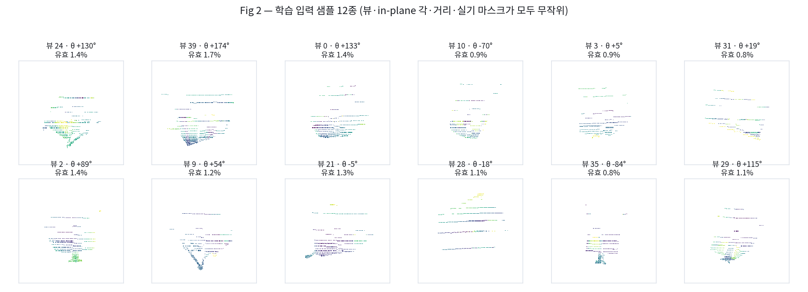
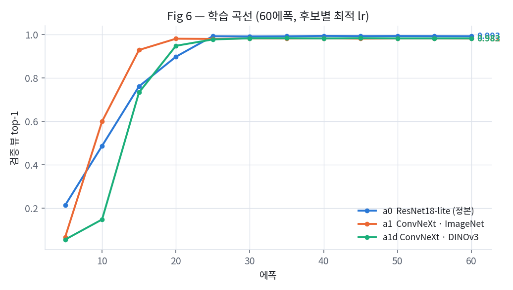
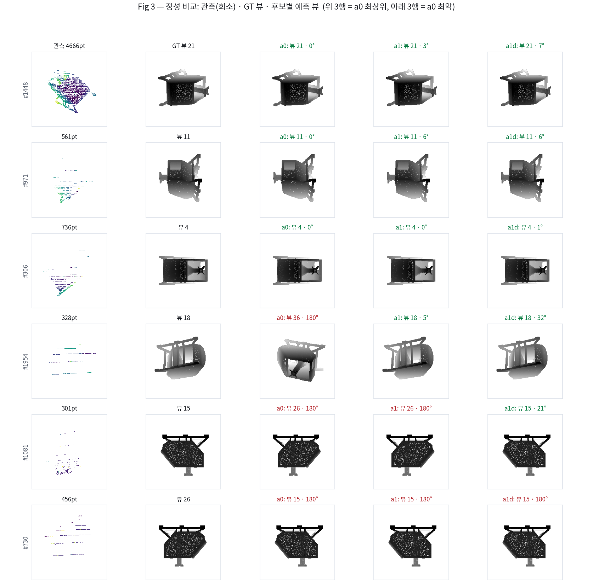
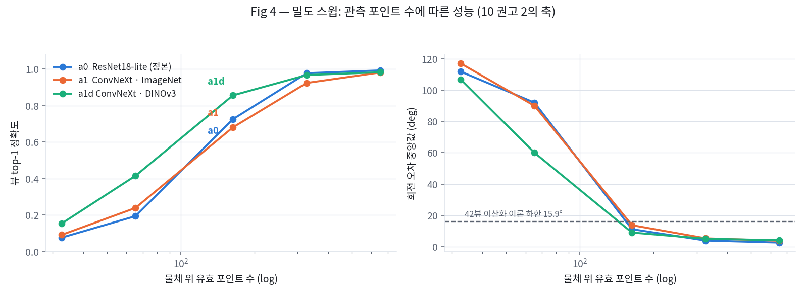
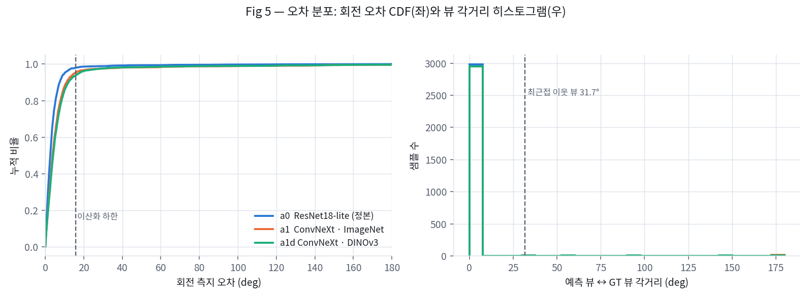

희소 LiDAR geo_maps 인코더 통제 비교 — S3 coarse 프록시 과제에서의 초기화 ablation (E-BB 파일럿 v2)
v2.0 · 2026-07-29 · 장비 RTX PRO 6000 Blackwell · torch 2.10.0+cu128 · timm 1.0.27
대상 설계: 03 §6.2(기하 인코더 3후보) · 판정 계획: 12 §8 · 선행 실측: 13
요약
Shape6D S3의 기하 인코더 후보를 고르기 위해, 희소 LiDAR 관측에서 물체의 coarse 자세를 맞히는 프록시 과제를 만들어 세 인코더를 동일 조건에서 학습·비교했다.
데이터는 프로젝트 자체 S0 렌더러로 SKID CAD의 42뷰 관측을 합성하고 UAM 실기 로그에서 추출한 LiDAR 유효마스크 156종을 곱해 만들었다(물체당 중앙 653pt).
비교 대상은 a0 ResNet18-lite(정본·스크래치), a1 절단 ConvNeXt-T(ImageNet), a1d 절단 ConvNeXt-T(DINOv3)이며 셋 다 예산 1.33~1.37M / 1.73~1.77 GMACs로 정합했다.
결과는 밀도에 따라 갈린다. 운용 밀도(653pt)에서는 세 후보 모두 top-1 0.98~0.99로 포화해 판별력이 없다(정본이 근소 우위).
그러나 관측을 솎아 163pt로 낮추면 DINOv3가 오답률을 28.2%→14.7%로 절반으로 줄이고, 65pt에서는 top-1이 0.194→0.415로 2.1배가 된다.
즉 사전학습의 가치는 정확도 상한이 아니라 희소 강건성에서 나타나며, 운용 밀도에서만 평가하면 이 차이가 보이지 않는다.
12 서베이는 S3 기하 인코더로 DINOv3 ConvNeXt-Tiny의 stem+stage1~2를 잘라 쓰는 안을 제안했고, 그 근거는 ① 출력 격자(stride-4, 56²)가 설계 요구와 일치하고 ② 예산에 들어오며 ③ 사전학습이 학습 물체 다양성 부족을 보상할 수 있다는 것이었다. ①②는 계산으로 확인됐으나(13 §2) ③은 측정된 적이 없었다.
이 실험이 답해야 하는 질문은 셋이다.
Q1 RGB 도메인 사전학습이 10채널 geo_maps 도메인으로 전이되는가? — a1/a1d vs 스크래치
Q2 DINOv3(17억 장 SSL)가 ImageNet(지도학습)보다 나은가? — a1d vs a1
Fig 1. 입력 생성 4단계와 geo_maps 채널. (a) SKID CAD를 표면 20만점 샘플 후 splat_depth로 42뷰 중 하나에서 렌더 — 물체가 프레임의 약 20%를 차지한다. (b) UAM robot_log에서 물체 crop을 잡아 추출한 실제 LiDAR 유효마스크 — 스캔라인 구조가 그대로 보인다. (c) (a)×(b)가 학습 입력. (d) 그 결과 4×4 stem 셀의 57.8%가 통째로 빈다 — 유효 픽셀이 균일 분포가 아니라 줄무늬로 뭉치기 때문이며, 이것이 13 §3에서 이항 가정이 11배 빗나간 이유다.
항목
설정
근거 / 실측
CAD
SKID (실 타깃), 표면 균일 샘플 200,000점
03 §3.2의 surface_pts M≥5만 규약
뷰
icosphere42() 중 균등 무작위
S0 42뷰 규약과 동일
in-plane 각 θ
U(−180°, +180°)
연속 — 회귀 대상
거리 지터
±12% (가산)
스케일 불변성 강제
희소화
UAM 실기 유효마스크 156종에서 무작위 선택 후 곱
마스크 평균 유효율 17.4% (범위 3.3~41.8%)
결과 관측 밀도
물체당 653pt (중앙값), p10 530 / p90 912
설계 분포 N_obj ~ U[32,2000] 내부
규모
학습 12,000 / 검증 3,000
검증은 별도 시드(999)로 생성

Fig 2. 학습 입력 12종. 뷰·in-plane 각·거리·실기 마스크가 모두 독립적으로 무작위이므로, 같은 뷰라도 관측 패턴이 전혀 다르다. 프레임 기준 유효율은 0.6~2.5% 수준이다.
2.2과제와 라벨
실제 S3 PEM은 점-점 대응을 학습하지만, 그것을 그대로 돌리려면 매칭부·손실·가설생성까지 전부 구현해야 한다(현재 리포에 nn.Module 0개). 인코더만 비교하려면 인코더 출력만으로 풀 수 있는 최소 과제가 필요하다. 그래서 S3 coarse의 이산화 근사를 썼다.
입력 geo_maps (10, 224, 224) XYZ(3) + 노멀(3) + 유효마스크(1) + 정규화깊이(1) + flags(2)
출력 ① 뷰 인덱스 42-way 분류 ← out-of-plane 자세
② in-plane 각 (cos θ, sin θ) ← 연속 회귀
손실 L = CrossEntropy(뷰) + MSE(cos·sin)
이 과제가 잰다고 주장하는 것과 아닌 것. 뷰 42-way + in-plane 회귀는 "희소 관측에서 물체의 방향을 읽어낼 수 있는가"를 잰다 — 인코더가 해야 할 일의 핵심이다. 그러나 점-점 대응의 정밀도는 재지 않는다. 따라서 결과는 인코더 간 상대 비교로만 유효하며 최종 포즈 정확도의 예측치가 아니다.
2.3비교 대상 — 무엇이 같고 무엇이 다른가
후보
인코더
초기화
Params
GMACs
GPU ms
비고
a0
ResNet18-lite (w=80) + FPN
스크래치
1.367M
1.774
0.69
03 §6.2 후보 (a)의 재구성 — 정본 대조군
a1
ConvNeXt-T stem+s1+s2 절단
ImageNet 지도학습
1.330M
1.726
0.72
12 §7.1 권고안 (사전학습 대리)
a1d
동일 구조
DINOv3 (LVD-1689M SSL)
1.330M
1.726
0.72
가중치 매핑 검증 완료 (오차 0.000e+00)
Table 1. 후보 구성. 셋 다 중첩 partial-conv stem(비중첩 4×4 patchify는 희소 입력에서 붕괴 — 13 §3)과 1×1 lateral FPN(3×3 full은 1.97 GMACs로 예산 초과)을 공유하며, 출력은 모두 (256, 56, 56)이다. 파라미터·연산이 3% 이내로 정합해 용량 통제가 성립한다.
차이의 차이 — 세 비교가 각각 다른 것을 분리한다
a1 − a0 = 구조 변경 + 사전학습 (합) a1d − a1 = 사전학습 코퍼스·목적의 차이만 (구조·코드경로·데이터·스케줄 전부 동일, 가중치만 교체) a1 vs a2(13 §4.2에서 측정) = 같은 구조에서 사전학습 유무만
a1과 a1d는 완전히 같은 코드 경로를 탄다. transformers 체크포인트를 timm 키로 매핑한 뒤 원본 모델과 stage0·stage1 출력을 대조해 최대 절대오차 0.000e+00(비트 동일)을 확인했다.
뷰 = GAP → Linear(256→42) · 각 = 1×1(256→32) → 8×8 적응풀 → MLP
동일 조건
세 후보가 같은 학습셋·같은 검증셋·같은 헤드·같은 에폭 수
lr을 후보별로 다르게 준 이유. 13 §6.2에서 사전학습 가중치는 고LR에서 파괴됨을 확인했다(a1d를 lr 1e-3으로 돌리면 각 MAE 90.7° = 완전한 우연). "동일 하이퍼파라미터"는 공정해 보이지만 실제로는 사전학습 후보에 불리한 비교이므로, 후보별 최적 lr을 쓰는 것이 통제로서 옳다.
2.5평가 지표 — top-1은 무엇을 뜻하는가
선행 보고(13)는 뷰 top-1만 보고했는데, 이 값은 42-way 분류 정확도일 뿐 포즈 오차를 말해주지 않는다. 이번에는 예측을 회전행렬로 복원해 측지 오차로 환산했다.
지표
정의와 해석
뷰 top-1
42-way 분류 정확도. 우연 수준 = 1/42 = 2.4%
뷰 각거리
예측 뷰 방향 ↔ GT 뷰 방향 사이 각. 42뷰의 최근접 이웃 간격은 31.7°(균일)
회전 측지 오차
Rpred = Rz(θ̂)·Rview(v̂) 와 GT 사이의 측지 거리(deg). 실제 포즈 오차
≤30° 비율
후속 ICP가 수렴할 만한 범위 안에 든 비율 (coarse 단계의 실질 성공률)
이산화 하한. 42뷰 이산화만으로 out-of-plane 오차가 최대 약 15.9°(=31.7°/2) 남는다. 다만 회전 측지 오차의 중앙값은 이보다 작을 수 있다 — ① 15.9°는 뷰 셀 경계의 최악값이고 셀 내부 평균은 더 작으며 ② in-plane 각을 연속 회귀하므로 전체 회전 오차가 뷰 이산화에만 지배되지 않기 때문이다. 실제로 653pt에서 a0의 회전 오차 중앙값은 2.6°였다.
3결과
3.1운용 밀도(653pt) — 세 후보 모두 포화
후보
초기화
뷰 top-1 ↑
회전 p50 ↓
회전 p90 ↓
≤30° ↑
in-plane MAE ↓
오답률
a0
스크래치
0.9930
2.6°
7.5°
98.8%
3.8°
0.70%
a1
ImageNet
0.9820
3.8°
11.1°
97.5%
5.5°
1.80%
a1d
DINOv3
0.9830
4.1°
12.0°
97.5%
6.0°
1.70%
Table 2. 운용 밀도(물체당 653pt, 실기 마스크 그대로) 성능. 시드 0. 세 후보가 모두 97.5~98.8%로 포화했고 정본(a0)이 근소 우위다. 이 동작점은 인코더를 판별하지 못한다 — 과제가 너무 쉽다.

Fig 6. 학습 곡선. 세 후보 모두 60에폭에서 포화했다. 사전학습 후보(a1·a1d)가 초반 수렴이 빠르다 — 13 §4.1에서 8에폭 축소 파일럿이 순위를 뒤집었던 원인이 이 곡선 모양의 차이다.
3.2정성 비교

Fig 3. 관측(희소) · GT 뷰 렌더 · 후보별 예측 뷰 렌더. 상위 3행은 a0 기준 최상위, 하위 3행은 최악 케이스. 최악 케이스의 실패는 전부 180° 부근의 뷰 혼동이며, 마지막 행에서는 예측 뷰(15)와 GT 뷰(26)의 렌더가 육안으로 구분되지 않는다 — 모델의 오류가 아니라 물체의 대칭 모호성이다. 이는 07의 UAM 실기 평가에서 관측된 "플립·90°급 근사대칭 실패 34%"와 같은 유형이며, 10 §6.2가 "기하만으로는 원리적으로 구분 불가"로 지목한 바로 그 실패다.
정량적 맥락. 운용 밀도에서 오답 자체가 드물다(0.7~1.8%). 그중 >135° 플립은 a0 19% · a1 37% · a1d 37%로, 전체 샘플 대비로는 0.13~0.90%다. Fig 3은 최악 케이스를 골라 본 것이므로 플립이 지배적으로 보이지만, 전 구간 통계는 그렇지 않다.
3.3밀도 스윕 — 판별력은 희소 구간에 있다

Fig 4. 관측 포인트 수에 따른 성능(로그 x축). 326pt 이상에서는 세 곡선이 겹치지만, 163pt 이하에서 갈라지며 DINOv3가 뚜렷이 앞선다. 우측 회전 오차에서 점선은 42뷰 이산화 하한(15.9°)이다.
유효점 수
a0 (정본)
a1 (ImageNet)
a1d (DINOv3)
a1d − a0
비고
653 (운용)
0.9930 / 2.6°
0.9820 / 3.8°
0.9830 / 4.1°
−0.010
포화 — 판별 불가
326
0.9777 / 3.9°
0.9243 / 5.3°
0.9677 / 5.1°
−0.010
—
163
0.7257 / 11.1°
0.6807 / 13.7°
0.8563 / 9.0°
+0.131
오답률 28.2% → 14.7%
65
0.1937 / 92.1°
0.2387 / 90.1°
0.4150 / 60.0°
+0.221
top-1 2.1배, 회전 −32°
33
0.0763 / 111.9°
0.0913 / 117.1°
0.1537 / 107.0°
+0.077
전 후보 붕괴 구간
Table 3. 밀도별 뷰 top-1 / 회전 오차 중앙값. 시드 0. 굵게 표시한 두 행이 판별 구간이다.

Fig 5. 운용 밀도에서의 오차 분포. 좌: 회전 측지 오차 CDF — 세 후보 모두 97% 이상이 30° 이내. 우: 예측 뷰 ↔ GT 뷰 각거리 히스토그램 — 대부분 0°(정답)에 몰려 있고, 오답은 인접 뷰(31.7°)가 아니라 먼 뷰에 흩어져 있다.
3.4실패 구조 — 판별 구간에서
후보
밀도
오답률
≤45° (근접실패)
45–135° (다른 뷰)
>135° (플립)
a0
163pt
28.2%
0.20
0.61
0.19
a1
163pt
31.2%
0.26
0.49
0.25
a1d
163pt
14.7%
0.20
0.54
0.26
a0
65pt
81.0%
0.19
0.67
0.14
a1
65pt
75.8%
0.29
0.49
0.21
a1d
65pt
58.1%
0.23
0.61
0.17
Table 4. 판별 구간의 오답 구조. 실패의 종류가 아니라 양이 다르다 — 세 후보 모두 오답의 절반 이상이 "전혀 다른 뷰"(45–135°)이고, DINOv3의 이점은 그 오답 자체를 줄이는 데서 온다. 근접실패·플립 비율은 후보 간 큰 차이가 없다.
4논의
① 평가 동작점을 잘못 잡으면 인코더는 구분되지 않는다
운용 밀도(653pt)에서 세 후보는 97.5~98.8%로 포화했고, 정본이 오히려 근소 우위였다. 이 지점만 보면 "사전학습은 쓸모없다"가 결론이 된다. 그러나 163pt로 내리면 DINOv3가 오답률을 절반으로 줄인다. 따라서 12 §8의 판정 축에 "밀도 스윕"을 넣은 것은 옳았고, 나아가 판정을 운용 밀도가 아니라 열화 구간에서 해야 한다는 것이 이 실험의 방법론적 결론이다. 10 권고 2가 요구한 곡선이 실제로 판정을 바꾼 첫 사례다.
② 사전학습의 가치는 "정확도"가 아니라 "강건성"으로 나타난다
Q1·Q2에 대한 답: RGB 사전학습은 geo_maps 도메인으로 전이된다. 다만 그 이득은 데이터가 충분할 때(653pt) 0에 가깝고, 정보가 부족해질수록 커진다(163pt +0.131 → 65pt +0.221). 이는 사전 지식이 데이터 부족을 보완한다는 통상적 관찰과 일치하며, 희소 LiDAR라는 우리 조건에서 특히 의미가 있다.
그리고 DINOv3 > ImageNet이다 — 163pt에서 0.856 vs 0.681. 우리가 가져오는 것이 stage1·2의 저·중수준 필터뿐인데도 그렇다.
③ 선행 보고(13)의 결론이 뒤집힌 이유 — 동작점이 틀렸었다
13은 "DINOv3는 정본과 동률(−0.0007), ImageNet이 +0.024로 최선"이라고 보고했다. 이번에 그 실험의 데이터 생성에 결함이 있었음을 발견했다 — CAD 메시의 정점(35,672개)을 splat해서 렌더 자체가 유효율 1.5%(750px)였고, 실기 마스크를 곱한 뒤 물체당 58pt에 불과했다.
즉 13의 "밀도 100%"는 실제로는 이번 실험의 65pt보다도 희소한, 전 후보가 붕괴하는 구간이었다. 그 구간에서는 세 후보가 모두 낮은 값에 몰려 차이가 노이즈에 묻힌다. 13 §4.2c의 수치는 폐기하고 이 문서로 대체한다. 수정: 표면 균일 샘플 200,000점 → 렌더 유효율 22.7%(11,386px) → 마스크 적용 후 653pt(설계 분포 U[32,2000] 내부).
④ 실패의 성질은 인코더로 바뀌지 않는다. Table 4에서 보듯 오답의 구성(근접실패 / 다른 뷰 / 플립)은 후보 간 거의 같다. 특히 대칭 모호성으로 인한 플립(Fig 3 마지막 행)은 어떤 인코더도 원리적으로 풀 수 없다. 10 §6.2가 지적한 대로 이는 인코더가 아니라 직립 프라이어·free-space 증거·멀티뷰로 풀어야 할 문제다.
5한계
단일 CAD·단일 과제. SKID 하나이고 뷰 분류 프록시다. 03 §1이 지목한 팔레트 포켓(깊이 불연속) 형상은 포함되지 않았다 — image-grid conv 계열(a0·a1·a1d 공통)의 탈락 조건이 이 실험에서는 걸리지 않는다.
대응 정밀도를 재지 않는다. 최종 포즈 정확도(10mm/1°)는 fine 매칭과 ICP가 결정하며, 이 실험은 그 앞단만 본다.
후보 (b)/(c) 미포함. PointNet++·sparse conv는 돌리지 않았다. §3.4의 결론(희소성은 image-grid 공통 문제)상 이들의 필요성은 오히려 커졌다.
시드. Table 2~4는 시드 0이다. 시드 3종 반복은 §6에 별도 보고한다.
TRT 미검증. 12 §8의 판정축 4번(엔진 변환·Orin 실측)은 여전히 미착수다.
[사후 정정] 실기 마스크의 학습 사용 — 테스트 셋 유출. 이 실험은 UAM 로그에서 추출한 유효마스크 156종을 학습 희소화에 직접 사용했다. UAM 로그는 평가 전용 테스트 셋이므로 이는 테스트 도메인 입력의 유출이며, 학습·검증이 같은 마스크 풀을 공유해 밀도 강건성 수치도 낙관 편향일 수 있다. 후속 실험(17 §5.5 정책)부터는 센서 스펙 기반 합성 희소화(ML-X 격자·scanline·Ruby128 레짐)로 대체하고, 실기 마스크는 합성기의 통계 검증에만 쓴다.
6선행 보고에 대한 정정과 다음 단계
#
대상
조치
①
13 §4.2 / §4.2b / §4.2c 전체 수치
폐기 — 데이터 생성 결함(물체당 58pt)으로 전 후보가 붕괴 구간에 있었다. 이 문서의 Table 2~4로 대체
②
13 §2 예산 실측 · §3 stem 점유율
유효 — 렌더 결함과 무관한 측정이다
③
12 §7 "절단 후 직접 사용" 기각 판정
재검토 필요 — 판별 구간에서 DINOv3가 명확히 우세하므로 기각 근거가 사라졌다
④
12 §8 판정 기준
강화 — "밀도 스윕 포함"에서 "판정은 열화 구간에서 한다"로
6.1다음 단계
시드 3종 — 163pt/65pt 격차가 시드 노이즈가 아님을 확인 (진행 중, §6.2에 추가)
팔레트형 CAD 추가 — 03 §1이 지목한 (a) 계열 탈락 조건을 실제로 걸어본다
후보 (b) PointNet++ · (c) sparse conv — 희소성이 image-grid 공통 문제로 확인된 이상 필수